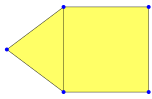
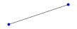
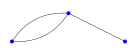
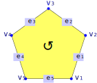
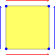
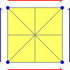
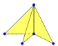
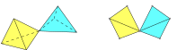

Surfaces are a special case of polygonal complexes and the package provides functionality to determine whether a polygonal complex is a surface.
This chapter presents the different ways in which surfaces are used in the SimplicialSurfaces-package. More accurately, it presents structures that are build from polygons (note that these can be much more general than simplicial surfaces). We employ two different models for these structures:
Description by incidence geometry. This leads to the concept of PolygonalComplex (section 2.1). The requirements for these to be surfaces are explained in section 2.3.
If incidence geometry is not sufficient to describe a polygonal structure, additional information (a barycentric subdivision of the faces) can be used. This leads to the concept of TwistedPolygonalComplex (section 2.2).
Polygonal Complexes are structures that are build from polygons, like shown in the following figure (for the precise definition, see section 2.1).
Surfaces are a special case of polygonal complexes and the package provides functionality to determine whether a polygonal complex is a surface.
A polygonal complex is defined by a two-dimensional incidence geometry that fulfills some regularity conditions (the complete definition will be given at the end of this section in definition 2.1-1). We will exemplify this by the following surface.

In a two-dimensional incidence geometry we have a set \(V\) of vertices, a set \(E\) of edges and a set \(F\) of faces. If we label our surface like this, 
we have the sets
\(V = \{2, 3, 5, 7, 11\}\)
\(E = \{6, 8, 9, 10, 12, 13\}\)
\(F = \{I, IV\}\).
These sets can't encode the surface on their own. The relations between vertices, edges, and faces are also necessary. Therefore we define a transitive relation in the union of \(V \times E\), \(V \times F\), and \(E \times F\), where \((a,b)\) is in the relation if and only if \(a\) is incident to \(b\). Since the relation is transitive, it is sufficient to specify the tuples in \(V \times E\) and \(E \times F\). In our example the relation is generated by
\(\{ (2,6), (2,8), (3,8), (3,9), (3,12), (5,6), (5,9), (5,10), (7,12), (7,13), (11,10), (11,13)\}\)
and
\(\{ (6,I), (8,I), (9,I), (9,IV), (10,IV), (12,IV), (13,IV) \}\).
However, we do not permit arbitrary incidence relations but only those satisfying certain regularity conditions (like in our example). For example, every edge should consist of exactly two vertices (more formally, for every edge there should be exactly two vertices that are incident to it).

If we try to generalize this condition to the faces we encounter some difficulties. For example, if we only enforce that each face has exactly three edges and three vertices, it would be possible that two of those edges share all of their vertices. Therefore even the case of triangles is quite complicated.

We will solve this problem by imposing a cyclic ordering on the vertices and edges that are incident to each face, such that those are compatible with the incidence structure. Since this definition is equally valid for all polygons (not just triangles), we formally define:
For every face the number of incident vertices is equal to the number of incident edges. Additionally there is an enumeration of the vertices (\(v_1, v_2, ..., v_k\)) and the edges (\(e_1, e_2, ..., e_k\)) such that the vertices \(v_i\) and \(v_{{i+1}}\) are incident to the edge \(e_i\) (where we read indices \(\bmod k\)).

With these conditions we have guaranteed that all edges and faces behave as in our previous example. But they still allow the possibility of an incidence relation where we have vertices but no faces. Since we want to exclude singular cases like this from our considerations, we require that every vertex is incident to at least one edge and that every edge is incident to at least one face.
A polygonal complex is a two-dimensional incidence geometry consisting of vertices, edges, and faces such that the following conditions hold (for a more intuitive explanation see section 2.1):
For every edge there are exactly two vertices that are incident to it.
For every face the number of incident vertices is equal to the number of incident edges. Additionally there is an enumeration of the vertices (\(v_1, v_2, ..., v_k\)) and the edges (\(e_1, e_2, ..., e_k\)) such that the vertices \(v_i\) and \(v_{{i+1}}\) are incident to the edge \(e_i\) (where we read indices \(\bmod k\)).
Every vertex is incident to an edge and every edge is incident to a face.
It is now easy to verify that the examples in the picture
are all polygonal complexes.
‣ IsPolygonalComplex( object ) | ( property ) |
Returns: true or false
Checks whether object is a polygonal complex. A polygonal complex can be informally described as a structure that is constructed from polygons.
More formally (for a more extensive explanation see section 2.1) a polygonal complex is a two-dimensional incidence geometry of vertices, edges and faces such that the following conditions hold:
Every edge has exactly two incident vertices.
For every face the incident edges and vertices form a polygon (see definition 2.1-1).
Every vertex is incident to an edge and every edge is incident to a face.
While polygonal complexes are quite general, they can't describe all possible triangulations of a topological surface. For example, we can construct a torus from a single polygon by starting with a square and identifying opposite edges.

Since all vertices of the square collapse into a single vertex, it is impossible to describe this situation by a polygonal complex (as every edge needs to be incident to exactly two vertices). Structures like these appear naturally in several cases, for example.
Construction of surfaces from the coset action of a group.
Construction of the geodesic dual.
In these cases, the more general formalism of twisted polygonal complexes is helpful. To interpret the torus as a twisted polygonal complex, we subdivide it barycentrically.

The small triangles within each face are called chambers. A twisted polygonal complex stores the incidences between vertices, edges, and faces (like a polygonal complex). In addition, it also stores a set of chambers, together with their adjacencies. Each chamber can be adjacent to another chamber along each of its edges.
Along the shortest edge, each chamber is adjacent to exactly one other chamber. We call these chambers 0-adjacent. In the torus, the pairs are \((1,2)(3,4)(5,6)(7,8)\).
Along the longest edge, each chamber is adjacent to exactly one other chamber. We call these chambers 1-adjacent. In the torus, the pairs are \((1,8)(2,3)(4,5)(6,7)\).
Along the middle edge, a chamber may be adjacent to any number of other chambers. All of them are called 2-adjacent. In the torus, each chamber is 2-adjacent to exactly one chamber. The pairs are \((1,6)(2,5)(3,8)(4,7)\).
Both 0-adjacency and 1-adjacency can be interpreted as involutions without fixed points (i.e. elements from the symmetric group on the chambers). The 2-adjacency can be represented by an equivalence relation on the chambers. Naturally, we cannot pick any involutions and equivalence relations:
Applying the 0-adjacency-involution does not change the edge and the face of a given chamber.
Applying the 1-adjacency-involution does not change the vertex and the face of a given chamber.
If two chambers are 2-adjacent, they have the same vertex and edge. Furthermore, applying the 0-adjacency-involution to both produces 2-adjacent chambers.
If two chambers have the same edge, they are either 2-adjacent or the first chamber is 2-adjacent to the chamber that arises from applying the 0-adjacency-involution to the second chamber.
If two chambers have the same face, we can obtain the second chamber from the first chamber by repeatedly applying the 0-adjacency-involution and 1-adjacency-involution.
‣ IsTwistedPolygonalComplex( object ) | ( property ) |
Returns: true or false
Checks whether object is a twisted polygonal complex. A twisted polygonal complex can be informally described as a structure that is constructed from polygons, where the polygons may be twisted (e.g. there could be a polygon with one vertex and three edges). More formally (for a more extensive explanation see Section 2.2) a twisted polygonal complex is TODO
TODO explain how to work with it
Polygonal surfaces are polygonal complexes (compare section 2.1) that behave like surfaces (two-dimensional manifolds with boundary). For example, they arise from the discretisation of a continuous surface. Simplicial surfaces are polygonal surfaces, where all polygons are triangles.
There are two properties that distinguish polygonal surfaces from polygonal complexes:
There are no ramified edges, i.e. every edge is incident to at most two faces. This excludes cases like three triangles that share one edge.

There are no ramified vertices. We will formalize this below but the aim of this condition is to exclude cases like these: 
If only the first condition is fulfilled, we have a polygonal complex without edge ramifications.
‣ IsNotEdgeRamified( complex ) | ( property ) |
Returns: true or false
Checks whether the twisted polygonal complex complex has no edge ramifications.
If complex is a polygonal complex, this means that every edge is incident to at most two faces.
If complex is a twisted polygonal complex, this means that every chamber is 2-adjacent to at most one other chamber.
We now proceed to formalize the second condition. Intuitively we want to distinguish between the different coloured faces in these examples:

They can be distinguished by the fact that faces of the same colour are connected by edges that are incident to the given vertex. More formally:
An umbrella-path around the vertex \(V\) is a tuple \((e_1,f_1,e_2,f_2, \ldots, e_n, f_n, e_{{n+1}})\) such that:
The \(f_i\) are pairwise disjoint faces incident to \(V\).
The \(e_i\) are pairwise disjoint edges incident to \(V\) (with the possible exception of \(e_1 = e_{{n+1}}\) in the case \(n > 1\)).
The edges \(e_i\) and \(e_{{i+1}}\) are incident to \(f_i\) for all \(i\).
If \(e_1 = e_{{n+1}}\) the umbrella-path is called closed. 
With this definition in mind we can explicate the second property:
For every vertex \(V\) all incident edges and faces can be arranged in an umbrella-path around \(V\) (compare definition 2.3-2), i.e. there are no vertex-ramifications.
For generic polygonal complexes without edge ramifications we can't expect to get exactly one umbrella. In our examples above all incident edges and faces could be represented by two umbrellas.
‣ IsNotVertexRamified( complex ) | ( property ) |
Returns: true or false
Checks whether the twisted polygonal complex complex has no vertex ramifications, i.e. that there is exactly one maximal umbrella for every vertex.
In general, we can always find a set of umbrella of a vertex such that all edges and faces incident to that vertex lie in exactly one of those umbrellas. This is called the umbrella partition of the vertex (we will talk more about this topic in section 3.4).
‣ IsPolygonalSurface( object ) | ( property ) |
Returns: true or false
Checks whether object (a polygonal complex) is a polygonal surface. Informally a polygonal surface is a surface (with boundary) that is build only from polygons.
More formally (for more details and examples see sections 2.1 and 2.3) a polygonal surface is a two-dimensional incidence geometry of vertices, edges, and faces such that the following conditions hold:
Every edge has exactly two incident vertices.
For every face the incident edges and vertices form a polygon (see definition 2.1-1).
Every vertex is incident to an edge and every edge is incident to a face.
Every edge is incident to at most two faces, i.e. there are no edge-ramifications.
For every vertex \(V\) all incident edges and faces can be arranged in an umbrella-path around \(V\) (compare definition 2.3-2), i.e. there are no vertex-ramifications.
‣ IsSimplicialSurface( object ) | ( property ) |
Returns: true or false
Checks whether object (a polygonal complex) is a simplicial surface. Informally a simplicial surface is a surface (with boundary) that is build only from triangles.
More formally (for more details and examples see sections 2.1 and 2.3) a simplicial surface is a two-dimensional incidence geometry of vertices, edges, and faces such that the following conditions hold:
Every edge has exactly two incident vertices.
For every face the incident edges and vertices form a triangle (see definition 2.1-1).
Every vertex is incident to an edge and every edge is incident to a face.
Every edge is incident to at most two faces, i.e. there are no edge-ramifications.
For every vertex \(V\) all incident edges and faces can be arranged in an umbrella-path around \(V\) (compare definition 2.3-2), i.e. there are no vertex-ramifications.
generated by GAPDoc2HTML